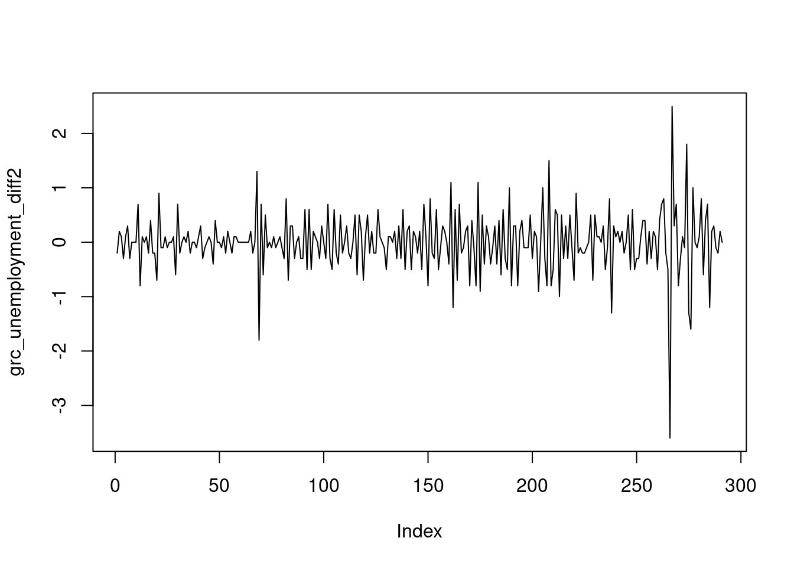

After loading the libraries I am able to use the commands of the readr package to import my data. My data is in .csv format, so I’ll use the read_csv() command (Wickham, Hester, et al., 2022) to import them.
Additionally, I choose not to include EA-19 values (as I investigate Greece’s unemployment).
Show the code
unemployment<-read_csv("data/unemployment.csv")%>%select(LOCATION, TIME, Value)%>%filter(LOCATION!="EA19")
So, above I see that I have dates in a format “YYYY-MM” (Year - Month) and they are considered as characters. With the help of lubridate package I will convert my time series on a Date format.
Good news! On this dataset there are 0 missing values, in total.
In case the dataset had missing values, I would first look at which variables those were.In a second phase, it might be necessary to replace the missing values.
Descriptive Statistics
The unemployment data for Greece refer to the period from April 1998 το August 2022. Regarding Europe we have data from January 2000 to August 2022.
The last 20 years have seen particularly large changes mainly in Greece, due to the domestic economic crisis. There is a noticeable change between September 2010 (10.1%) and September 2013 (28.1 %), in terms of unemployment in Greece. For the record, below you can find a table with the months that presented the highest unemployment in Greece. As you will notice the five highest values were observed in 2013.
Here we can see a big improvement in comparison with original data. I have some concerns about points close to 150 (mildly upwards trend) and 250 (outlier).
Given the concerns of above, I made also a second difference plot. It seems to solve the problem on points close to 150.
Show the code
grc_unemployment_diff2<-diff(grc_unemployment$Value, differences =2)plot(grc_unemployment_diff2, type ="l")

Examine Stationarity with Statistical tests
The graphical interpretation of stationarity can be beneficial for a quick assessment on topic of stationarity. However it can be considered a subjective metric, which leads on a non consistent decision (someone may consider the second figure as stationary and some others not.
Thankfully, there are some statistical tests which can help us on our decisions. Some commonly used are :
\begin{array}{l}
H_0 : \text{Time series is not stationary} \\
H_1 : \text{Alternatively}
\end{array}
\equiv
\begin{array}{l}
H_0 : \text{There is a unit root} \\
H_1 : \text{Alternatively}
\end{array}
Συνεπώς, είναι προφανές από τα αποτελέσματα του στατιστικού ελέγχου Dickey Fuller ότι η χρονοσειρά μου δεν είναι στάσιμη. Θα πρέπει να εφαρμόσω τον έλεγχο Dickey-Fuller στις δοαφορές.
\begin{array}{l}
H_0 : \text{Time series is not stationary} \\
H_1 : \text{Alternatively}
\end{array}
\equiv
\begin{array}{l}
H_0 : \text{There is a unit root} \\
H_1 : \text{Alternatively}
\end{array}
After building some ARIMA models, I should decide which is the best one to make my estimations. One metric to evaluate those models is AIC (Akaike Information Criterion). The lower the value of AIC, the better my model.
So, the best model is the Auto Model (ARIMA(9,2,1)), which has the lowest AIC value.
Checking best models
Forecast Future Unemployment
Previously, I identify which is the best model. Now, I will use this model in order to predict unemployment for the next 6 months. It should be recalled that the last available value was from August of 2022 (12.2%). Therefore, I will make a prediction for unemployment in Greece until February 2023.
Given the diagram as well as the forecast table (of the best performing model, candidate #3), I conclude that a reduction in unemployment in Greece is expected in the next period of time (in the next six months). More specifically, Greece’s unemployment in February 2023 will range between 10% (9.4%) and 13% (14%) with an 80% (95%) probability (based on ARIMA(9,2,1) model).
Grolemund, G., & Wickham, H. (2011). Dates and times made easy with lubridate. Journal of Statistical Software, 40(3), 1–25. Retrieved from https://www.jstatsoft.org/v40/i03/
Hyndman, R. J., & Athanasopoulos, G. (2018). Forecasting: Principles and practice. OTexts.
Hyndman, R. J., & Khandakar, Y. (2008). Automatic time series forecasting: The forecast package for R. Journal of Statistical Software, 26(3), 1–22. https://doi.org/10.18637/jss.v027.i03
Hyndman, R., Athanasopoulos, G., Bergmeir, C., Caceres, G., Chhay, L., Kuroptev, K., … Yasmeen, F. (2022). Forecast: Forecasting functions for time series and linear models. Retrieved from https://CRAN.R-project.org/package=forecast
OECD. (2022). Unemployment rate (indicator). Retrieved October 14, 2022, from doi: 10.1787/52570002-en
R Core Team. (2021). R: A language and environment for statistical computing. Vienna, Austria: R Foundation for Statistical Computing. Retrieved from https://www.R-project.org/
R Graph Gallery. (2018). Time series. URL Https://r-Graph-Gallery.com/Time-Series.html.
Wickham, H. (2016). ggplot2: Elegant graphics for data analysis. Springer-Verlag New York. Retrieved from https://ggplot2.tidyverse.org
Wickham, H., Chang, W., Henry, L., Pedersen, T. L., Takahashi, K., Wilke, C., … Dunnington, D. (2022). ggplot2: Create elegant data visualisations using the grammar of graphics. Retrieved from https://CRAN.R-project.org/package=ggplot2